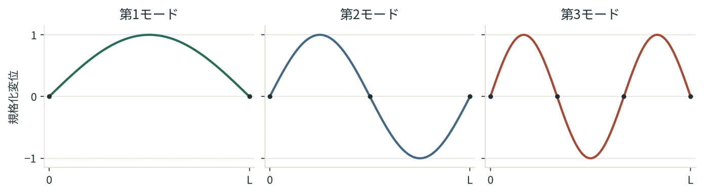

第24章 音波と楽器の物理
音波・弦・管の物理と、うなり・デシベルの計算。
一点の記録と空間を進む波
空気中の音は、通常、平衡圧のまわりの小さな圧力変動である。マイクを一点に置いたときに測る
と、空間および時間に依存する
を区別する。基本モデルは、
を周波数（Hz）、
を振幅（Pa）、
を初期位相、
を波長として
である。一定位相を追跡すると
が定数となり、。したがって位相速度は
。20
℃前後の空気で
とすれば、440 Hz の波長は約 0.78
m。周波数を倍にすると同じ媒質内で波長は半分になる。正弦波の周期は
であり、複合波の周期は構成成分から求める。
弦の固有振動を導く
長さ
、線密度
（kg/m）、張力
（N）の弦を両端で固定する。変位
が小さく傾きも小さいとし、張力の大きさを一定とみなす。区間
が受ける横方向合力は近似的に
。質量は
。ニュートンの第二法則を適用し、
で割って極限を取る。
定理 24.1（弦のモードの周波数）。
非零の振動する分離解
で
のものは、、
に限られる。逆に各
に対しそのモードが存在する。
証明を読む（読まなくても先へ進めます）
代入すると
、。一般解は
。
から
。非零解だから
、
から
。よって
。
を戻せば結論。逆向きは
を代入すればよい。∎

固定端をもつ弦の第1〜第3モード。各曲線はある瞬間の変位。交点のうち常に動かない点が節である。
やってみよう
実験。
張力を実質一定に保てる弦で、押さえる位置を半分にすると第1モードは約2倍、長さを
にすると約
倍。中央に指を軽く添えて弾くと、第1モードの中央は腹なので抑えられ、中央に節のある第2モードなどが残りやすい。軽く触れる奏法と、押さえて新しい固定端を作る奏法では境界条件が違う。ギターの12フレット近辺で両方を試す。
OpenStax
S08
管のモデルでも境界条件から固有振動が決まる。両端開管は圧力変動の節が両端にある近似で
。片端閉管は閉端で圧力変動の腹、開端で節となり、
から
。開口端補正、管の形、音孔、励振機構が実楽器に差をもたらす。鐘や膜の固有振動の周波数は、一般には整数倍に揃わない。
OpenStax
S09
うなりと音圧レベル
定理 24.2（同振幅の二正弦波のうなり）。 周波数
の近接した二音を同振幅・同初期位相で加えると、振幅包絡の山の繰返しは
Hz になる。
証明を読む（読まなくても先へ進めます）
和積公式より
搬送波の符号反転は振幅の大きさを変えない。包絡の絶対値
は
なら最小正周期
をもつ。
では包絡は一定。∎
実験室で 440 Hz と 442 Hz を合わせると約2回/秒、447 Hz
では約7回/秒になる。二振動が広く離れた場合も和積式は成り立つが、単一の搬送音のゆっくりした振幅変調として知覚される条件は変わる。
標準参照音圧
と二乗平均平方根
に対し、音圧レベル
dB SPL。強度の比を dB で表す式は
。進行平面波で媒質が同じなら強度が圧力の二乗に比例し、
となる。振幅の倍化は約 +6.02 dB、電力や強度の倍化は約 +3.01
dB。同じ周波数・同位相の同振幅波の完全加算では振幅が倍、相関のない同 rms
の信号では平均二乗が加算される。この違いはミキシングで重要になる。 OpenStax
S26
ここだけ押さえる
- 440 Hz の波長は約 0.78 m。
- 弦の長さを半分にすると、約1オクターヴ上がる。
- 振幅が2倍で +6 dB、パワーが2倍で +3 dB。
この章の資料
弦を伝わる波（コロラド大学 PhET、日本語）。
単一のパルスを送り、固定端と自由端で返ってくる山の向きを比べる。同じ点で往路と復路の変位を足してみる。端点が常に動けないという条件が、反射による符号の反転を要求する。
資料を開く
弦の節と倍音（ニューサウスウェールズ大学）。
第2、第3モードの図で動かない点を数える。弦の中央を軽く触れて制限した場合に生き残るモードを先に予測し、節が中央に来る図だけを選んで確かめる。
資料を開く